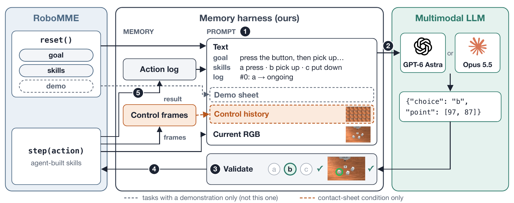
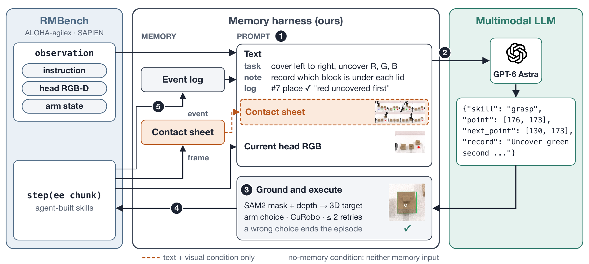
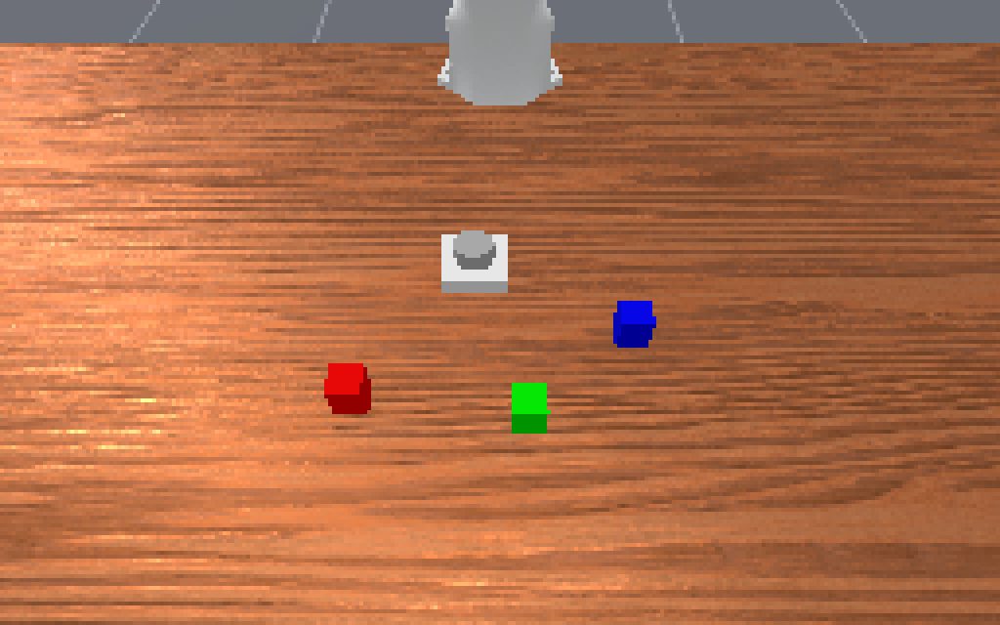
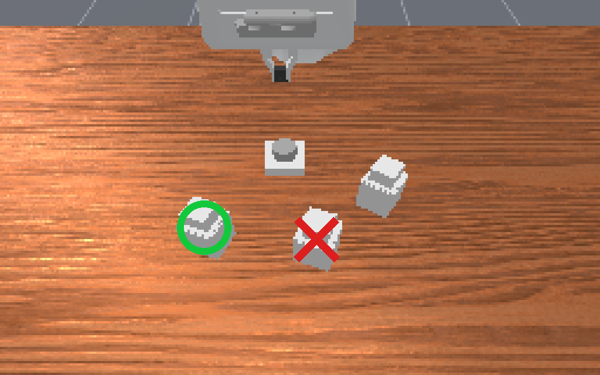

When Memory Lives Outside the Policy: Rethinking
Robot Memory Benchmarks with Agentic Harnesses
Abstract
Memory benchmarks for robot manipulation were designed to evaluate end-to-end robot foundation models, but general-purpose multimodal models can now control robots by choosing among high-level skills. We ask whether such benchmarks remain challenging in the agent era. We wrap GPT-6 Astra and Claude Opus 5.5 in a simple, training-free harness that selects RoboMME's high-level skills through stateless API calls, so that the model receives information about earlier steps only through the prompt that the harness builds. On 160 matched test episodes across all 16 tasks, GPT-6 Astra succeeds in 81.3% of episodes with a text log of its previous actions and their outcomes, and in 95.0% once it also sees a 24-frame sheet of its own past execution (Claude Opus 5.5: 76.9% and 88.8%), compared with 90.5% for humans. The gain is concentrated in three tasks whose key visual cue disappears before it is needed, and costs only about $0.04 more per episode. With high-level skills and privileged execution, a simple agent thus nearly saturates the benchmark, and its score depends substantially on which past observations the harness provides; because an episode requires fewer than four high-level decisions on average, we argue that robot memory benchmarks must move to longer-horizon tasks. On RMBench, removing all history drops success from 91% to 0%, yet a text action log alone matches text plus visual memory built from the frames seen at each decision (91% vs. 93%, p = 0.51), unlike RoboMME where visual memory adds 13.8 points (130 vs. 152 of 160, p = 2.7×10−5); RMBench's memory demand is largely met by an action log.
Two Deliberate Restrictions
We use the harness as a diagnostic instrument, not as a method to maximize success.
We bypass the model's native memory. The model keeps no chat session: every decision is a separate, stateless API call, and the harness rebuilds the request from scratch. The model therefore knows about earlier steps only what the harness puts in the prompt, and we can add or remove one memory source at a time: nothing, a structured log of past actions and their outcomes, or the log plus a visual history of the agent's own execution.
We let the model call only high-level skills. When the goal is to test memory, the agent should not be bottlenecked by the dynamics of manipulation. On RoboMME, it chooses among the benchmark's own skills, which RoboMME's planner executes. RMBench offers no skills, so the model names a skill and a pixel, and a fixed, training-free harness grounds the pixel and plans the motion. Failures then point to what the agent remembered, not to how well the arm moved.
The harness is otherwise kept minimal: no training, no retrieval, and no task-specific strategy beyond short notes on benchmark conventions. Its scores are a conservative estimate of what an agent can achieve, not the result of tuning.
| Full-context agent (e.g., Embodied-Astra) | Ours | |
|---|---|---|
| Memory | Native: one chained conversation per episode | No native memory. Each decision is a separate, stateless API call; the past enters only through the harness's payload (none / action log / visual history) |
| Control | Model outputs end-effector waypoints | Skills only. The model picks a skill (+ pixel); RoboMME's oracle planner or a fixed SAM2 + CuRobo harness executes it |
| Question | How well can a frontier model do? | What does the benchmark actually measure? |
Memory becomes a variable we can ablate, and failures point to memory rather than manipulation. The protocols differ, so we do not claim to outperform full-context agents.

One decision on RoboMME. The harness builds a prompt from the goal, skills, action log and current image (plus, in the
contact-sheet condition, a 24-frame sheet of past execution); the model answers in one stateless call; RoboMME's planner executes the skill.
Finding 1: A Simple Agent Nearly Saturates RoboMME
none: action log + demo
contact-sheet: + 24-frame visual history
human (dashed line)
Average success (%). Ours: 160 of the 800 test episodes, with privileged execution, so comparisons are indicative.
With the action log alone, GPT-6 Astra solves 81.3% of episodes and Claude Opus 5.5 76.9%. With visual history they solve 95.0% and 88.8%, and GPT-6 Astra reaches at least 90% on 13 of the 16 tasks. Under the same oracle-planner protocol, RoboMME's strongest foundation model, Gemini-2.5-Pro, reaches 47.9%, and the best end-to-end memory VLA 44.5%.
The remaining failures are mostly not about memory: StopCube requires pressing a button at the right moment, and with a
learned π0.5 executor instead of the planner, the three-tier GPT-6 Astra system loses mainly on precise or well-timed control.
For a strong agent, what remains hard on RoboMME is mostly execution and harness design.
Finding 2: An Action Log Is Enough on RMBench
On RoboMME, both conditions keep the action log, so they test which memory helps rather than whether memory is needed at all. On RMBench,
we therefore run a three-way ablation with GPT-6 Astra on 10 tasks × 10 seeds: no-memory (current image only, not even its own
previous actions), none (an action log), and contact-sheet (the log plus one head-camera frame per past decision).
RMBench has no skill library, so the harness also performs the manipulation, without reading privileged simulator state.
Successes out of 100. API cost: $0.17 (action log) vs. $0.23 (visual memory) per episode.
RMBench requires memory. Without any history, the planner fails every episode: on press_button and
blocks_ranking_try it cannot know how many presses or which arrangements it has already tried, and elsewhere it mostly
points at nothing or runs out of calls.
But an action log is enough. The log alone reaches 91/100, and adding visual memory gives 93/100, a difference that is not significant (6 vs. 3 discordant episodes, p = 0.51). This contrasts with RoboMME, where visual memory adds 13.8 points because the cue appears only briefly during the robot's own action. Once manipulation is handled by a competent harness, the memory RMBench tests largely reduces to what the agent has done so far.
RMBench harness and per-task results

RMBench has no skill library: the model outputs a skill and a pixel, and a fixed harness grounds it with SAM2 + depth and plans with CuRobo, without simulator state.
| Task | no-memory | none | contact-sheet |
|---|---|---|---|
battery_try | 0/10 | 7/10 | 7/10 |
blocks_ranking_try | 0/10 | 10/10 | 10/10 |
cover_blocks | 0/10 | 7/10 | 8/10 |
observe_and_pickup | 0/10 | 7/10 | 9/10 |
place_block_mat | 0/10 | 10/10 | 10/10 |
press_button | 0/10 | 10/10 | 10/10 |
put_back_block | 0/10 | 10/10 | 10/10 |
rearrange_blocks | 0/10 | 10/10 | 10/10 |
swap_T | 0/10 | 10/10 | 9/10 |
swap_blocks | 0/10 | 10/10 | 10/10 |
| Total | 0/100 | 91/100 | 93/100 |
Finding 3: Harness Memory Changes the Score


ButtonUnmask: “first press the button, then pick up the container hiding the red cube”.
With only the action log, the agent sees the covered scene and picks the center container. With visual history, earlier frames still show
the red cube on the left, and it picks correctly.
With the same model, code and task notes, adding a visual history of the agent's own execution changes the outcome of 28 of the 160 episode pairs for GPT-6 Astra, 25 of them in its favor (exact McNemar test, p = 2.7×10−5). For Opus, 23 of 27 changes are gains (p = 3.1×10−4). The benchmark score thus depends substantially on which past observations the harness provides.
The gains concentrate in three tasks, ButtonUnmask, ButtonUnmaskSwap and PickHighlight (23 of 25 gains for
GPT-6 Astra), where the decisive cue is visible only briefly, for example during the button press, and is gone when the agent needs it.
In contrast, the five Video* tasks do not change for GPT-6 Astra, because the demonstration is re-sent at every decision and
never has to be remembered.
Per-task results
| GPT-6 Astra | Opus 5.5 | GPT-6 Astra | Opus 5.5 | ||||||||
|---|---|---|---|---|---|---|---|---|---|---|---|
| Task | N | H | N | H | 3T | Task | N | H | N | H | 3T |
| VideoUnmaskd | 100 | 100 | 100 | 100 | 92 | SwingXtimes | 100 | 100 | 100 | 100 | 82 |
| VideoUnmaskSwapd | 100 | 100 | 100 | 90 | 100 | ButtonUnmask | 30 | 100 | 50 | 100 | 100 |
| VideoRepickd | 100 | 100 | 80 | 80 | 86 | ButtonUnmaskSwap | 20 | 100 | 20 | 100 | 84 |
| VideoPlaceButtond | 100 | 100 | 90 | 90 | 100 | PickHighlight | 20 | 100 | 40 | 100 | 84 |
| VideoPlaceOrderd | 100 | 100 | 100 | 100 | 98 | InsertPegd | 100 | 100 | 90 | 90 | 18 |
| BinFill | 80 | 80 | 90 | 90 | 82 | RouteStickd | 100 | 80 | 60 | 50 | 58 |
| PickXtimes | 100 | 100 | 100 | 100 | 96 | PatternLockd | 100 | 100 | 100 | 90 | 88 |
| MoveCubed | 100 | 100 | 90 | 90 | 80 | StopCube | 50 | 60 | 20 | 50 | 18 |
N / H: without / with visual history, 10 episodes per task. d: demonstration provided. 3T: GPT-6 Astra + π0.5 three-tier system.
What Benchmarks Need Next
In both benchmarks, an episode takes only a few high-level decisions (fewer than four on RoboMME, about nine on RMBench), and the relevant evidence can simply be kept in the prompt. RoboMME remains a useful diagnostic for agent-level memory pipelines, but its success rate alone cannot be read as a measure of the native memory of the underlying model. We therefore argue that future robot memory benchmarks should include:
- Much longer horizons, so the full history no longer fits in context and the agent must decide what to store.
- Demonstrations withheld after they are first shown, so they must be remembered rather than re-read.
- Cues that neither the current frame nor an action log can recover, the only regime in which our ablations separate memory representations.
Limitations
- Each RoboMME cell is run once per model on 160 of 800 test episodes; the McNemar test ignores that gains cluster within tasks.
- RoboMME's oracle planner gives privileged execution; results concern the benchmark's memory component, not end-to-end policies.
- The RMBench contact sheet holds only decision-time frames and cannot capture cues that appear during execution; the 91 vs. 93 result applies only to that form of visual memory.
- Some RMBench task notes tell the planner what to record, which favors the action log. RMBench seeds 0–9 were also used while debugging the harness; a rerun on unseen seeds is planned.
- We use a single planner on RMBench; a weaker open model and a full-context baseline under our harness are left for future work.
BibTeX
@article{wu2026memory,
title = {When Memory Lives Outside the Policy: Rethinking Robot Memory Benchmarks with Agentic Harnesses},
author = {Wu, Feiyang and Chen, Haoyu and Ji, Yandong and Chen, Haonan and Ye, Weirui and Liu, Yuejiang},
journal = {arXiv preprint},
year = {2026}
}